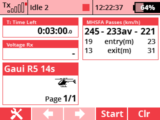

Some speed pilots have been setting alarms on their Jeti Tx's to use the GPS Distance measure provided by a GPS such as the PowerBox GPS Sensor II as a way of telling when you go into the course and out and looking at the data after the flight to get a rough idea of the average speed. With the advent of Jeti's latest transmitter firmware they have added the capability to make applications that can use the telemetry going to the transmitter and do cool things with it! Enter the MHSFA Course alarm application for Jeti. The application allows you to enter course details, either the MHSFA ones or ones of your own choosing and then it warns you when you enter the course, go in and out of the pre-stage and reads out the average speed when you have left the course on each pass. It will also display the fastest of each pass in each direction and the average in the telementry window and log the pass speeds and average to the Jeti log file using the latest tx firmware features.
Version: 1.4 - Added altitude display,built in audio files and squished a few bugs
Version: 1.3 - Increased sampling rate and squished a few bugs
Compatibility: DC/DS-14/16/24, DS-12
MHSFA Course is part of tools available from:AlCormack